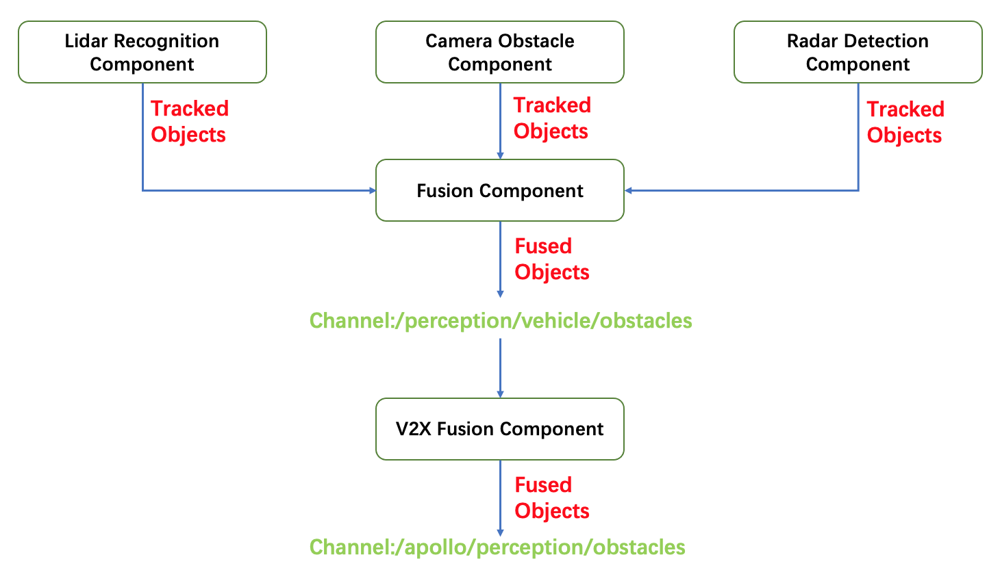
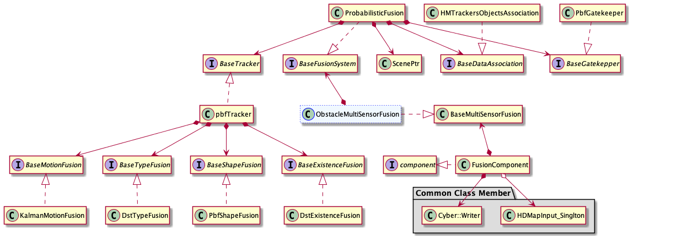

How to add a new fusion system¶
The detailed processing flow of fusion is shown below： 
The fusion system introduced by this document is located at fusion Component listed below. Current architecture of Fusion Component is shown： 
As we can see from above structure, fusion system is the derived class of BaseFusionSystem which acts as a abstract class member of ObstacleMultiSensorFusion located in Fusion Component. Next, We will introduce how to add a new fusion system based on current structure.
Apollo has provided one fusion system – Probabilistic fusion. It could be easily changed or replaced by other systems. The input of system should be objective obstacle data generated by detection and track of upstream sensors, while the output should be fused and tracked objective obastacle data. This document will introduce how to add a new fusion system, the basic task sequence is listed below：
Define a class that inherits
base_fusion_systemImplement the class
NewFusionSystemAdd config proto file for
NewFusionSystemUpdate config file to put your system into effect
The steps are elaborated below for better understanding:
Define a class that inherits base_fusion_system¶
All the fusion systems shall inherit base_fusion_system，which defines basic class members and a set of interfaces. Here is an example of the system implementation:
namespace apollo {
namespace perception {
namespace fusion {
class NewFusionSystem : public BaseFusionSystem {
public:
NewFusionSystem();
~NewFusionSystem();
NewFusionSystem(const NewFusionSystem&) = delete;
NewFusionSystem& operator=(const NewFusionSystem&) = delete;
bool Init(const FusionInitOptions& init_options) override;
bool Fuse(const FusionOptions& options,
const base::FrameConstPtr& sensor_frame,
std::vector<base::ObjectPtr>* fused_objects) override;
std::string Name() const override;
}; // class NewFusionSystem
} // namespace fusion
} // namespace perception
} // namespace apollo
The function signature of base_fusion_system is pre-defined：
struct FusionInitOptions {
std::vector<std::string> main_sensors;
};
struct FusionOptions {};
struct alignas(16) Frame {
EIGEN_MAKE_ALIGNED_OPERATOR_NEW
Frame() { sensor2world_pose.setIdentity(); }
void Reset() {
timestamp = 0.0;
objects.clear();
sensor2world_pose.setIdentity();
sensor_info.Reset();
lidar_frame_supplement.Reset();
radar_frame_supplement.Reset();
camera_frame_supplement.Reset();
}
// @brief sensor information
SensorInfo sensor_info;
double timestamp = 0.0;
std::vector<std::shared_ptr<Object>> objects;
Eigen::Affine3d sensor2world_pose;
// sensor-specific frame supplements
LidarFrameSupplement lidar_frame_supplement;
RadarFrameSupplement radar_frame_supplement;
CameraFrameSupplement camera_frame_supplement;
UltrasonicFrameSupplement ultrasonic_frame_supplement;
};
typedef std::shared_ptr<Frame> FramePtr;
typedef std::shared_ptr<const Frame> FrameConstPtr;
struct alignas(16) Object {
EIGEN_MAKE_ALIGNED_OPERATOR_NEW
Object();
std::string ToString() const;
void Reset();
int id = -1;
PointCloud<PointD> polygon;
Eigen::Vector3f direction = Eigen::Vector3f(1, 0, 0);
float theta = 0.0f;
float theta_variance = 0.0f;
Eigen::Vector3d center = Eigen::Vector3d(0, 0, 0);
Eigen::Matrix3f center_uncertainty;
Eigen::Vector3f size = Eigen::Vector3f(0, 0, 0);
Eigen::Vector3f size_variance = Eigen::Vector3f(0, 0, 0);
Eigen::Vector3d anchor_point = Eigen::Vector3d(0, 0, 0);
ObjectType type = ObjectType::UNKNOWN;
std::vector<float> type_probs;
ObjectSubType sub_type = ObjectSubType::UNKNOWN;
std::vector<float> sub_type_probs;
float confidence = 1.0f;
int track_id = -1;
Eigen::Vector3f velocity = Eigen::Vector3f(0, 0, 0);
Eigen::Matrix3f velocity_uncertainty;
bool velocity_converged = true;
float velocity_confidence = 1.0f;
Eigen::Vector3f acceleration = Eigen::Vector3f(0, 0, 0);
Eigen::Matrix3f acceleration_uncertainty;
double tracking_time = 0.0;
double latest_tracked_time = 0.0;
MotionState motion_state = MotionState::UNKNOWN;
std::array<Eigen::Vector3d, 100> drops;
std::size_t drop_num = 0;
bool b_cipv = false;
CarLight car_light;
LidarObjectSupplement lidar_supplement;
RadarObjectSupplement radar_supplement;
CameraObjectSupplement camera_supplement;
FusionObjectSupplement fusion_supplement;
};
using ObjectPtr = std::shared_ptr<Object>;
using ObjectConstPtr = std::shared_ptr<const Object>;
Implement the class NewFusionSystem¶
To ensure the new system could function properly, NewFusionSystem should at least override the interface Init(), Fuse(), Name() defined in base_fusion_system. Init() is resposible for config loading, class member initialization, etc. And Fuse() will implement the basic logic of system. A concrete NewFusionSystem.cc example is shown：
namespace apollo {
namespace perception {
namespace fusion {
bool NewFusionSystem::Init(const FusionInitOptions& init_options) {
/*
Initialization of your system
*/
}
bool NewFusionSystem::Fuse(const FusionOptions& options,
const base::FrameConstPtr& sensor_frame,
std::vector<base::ObjectPtr>* fused_objects) {
/*
Implementation of your system
*/
}
std::string NewFusionSystem::Name() const {
/*
Return your system's name
*/
}
FUSION_REGISTER_FUSIONSYSTEM(NewFusionSystem); //register the new fusion_system
} // namespace fusion
} // namespace perception
} // namespace apollo
Add config and param proto file for NewFusionSystem¶
Follow the following steps to add config proto file for the new system:
Define a
protofor the new system configurations according to the requirements of your algorithm. As a reference， you can found and follow theprotodefinition ofprobabilistic_fusion_configatmodules/perception/proto/probabilistic_fusion_config.protoOnce finishing your
proto, for examplenewfusionsystem_config.proto, add the following content at the file header:syntax = "proto2"; package apollo.perception.fusion; message NewFusionSystemConfig { double parameter1 = 1; int32 parameter2 = 2; }
Refer to
modules/perception/production/conf/perception/fusion/config_manager.configand add your system path:model_config_path: "./conf/perception/fusion/modules/newfusionsystem.config"
Refer to the
modules/probabilistic_fusion.configin the same folder and createnewfusionsystem.config:model_configs { # NewFusionSystem model. name: "NewFusionSystem" version: "1.0.0" string_params { name: "root_dir" value: "./data/perception/fusion/" } string_params { name: "config_file" value: "newfusionsystem.pt" } }Refer to
probabilistic_fusion.ptand createnewfusionsystem.ptfile atmodules/perception/production/data/perception/fusion/：Note：The "*.pt" file should have the same format with the "proto" files defined in step 1，2.
Update config file to put your system into effect¶
To use your new fusion system in Apollo，you need to modify the value of fusion_method to your system’s name in fusion_component_conf.pb.txt located in corresponding folder in modules/perception/production/data/perception/fusion/
Once you finished the above modifications, you new fusion system should take effect in Apollo.